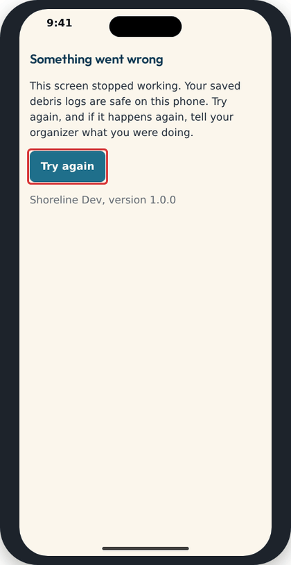

React Native & Expo · Part 3 · Session 24 of 26 · 3 hours
Session 24
Updates, Monitoring and the App Stores
Your app keeps getting better after it ships, and you know what the stores will ask.
Today
Three hours, two lessons, one check
| 0:00 | Launch-readiness check |
| 0:15 | 9.3 Updates and Monitoring: model, demo, lab, project |
| 1:20 | Break (10 min) |
| 1:30 | 9.4 The App Stores: model, demo, lab, project |
| 2:35 | Release checklist, launch check again |
| 2:50 | Exit ticket, homework, bring list |
LABS Labs:
labs/module-24. Work in starter/.Opening · 15 minutes
Is your project ready for the final project?
- In
shoreline:node labs/module-24/l9_4-the-app-stores/launch_check.mjs - It reads shoreline-crew; it changes nothing
- OK · CHECK (a step still to do) · FIX (a real problem) · NOTE
- Then the DO BY HAND list
RULE Expo account: optional · store accounts: NOT required
Opening · before today's lessons
READY WITH NOTES is normal today
CHECK no GitHub remote yet: create an empty repository named shoreline-crew on github.com (a free account) and push (Lesson 9.3, Step 7) CHECK no .github/workflows/ci.yml yet: the checks on every push are Lesson 9.3's Step 7 CHECK eas.json: preview and production need their own channels (Lesson 9.3, Step 3) CHECK eas.json: the production submit profile has no "track": "internal" yet (Lesson 9.4, Step 6) CHECK no src/utils/privacy.ts yet: the Your data screen is Lesson 9.4, Step 2 READY WITH NOTES: the CHECK lines are steps of Lessons 9.3 a…
WHY Session 23's code, committed: the CHECK lines are today's steps.
Opening · by hand
What no tool can check
- The phone test: same Wi-Fi,
node server.ts --host, Expo Go - Blocked network? Hotspot → --tunnel → web preview
- GitHub:
git push, then the Actions tab - No paid developer account, for anything in this course
WHY The web preview is a valid way to finish the final project.
9.3
Updates and Monitoring
The plan by radio, the kit by van.
9.3 · Mental model
Update or build?
By radio (an update)
- Screens, text, styles
- Pictures and fonts
- EXPO_PUBLIC_ values
- Runs at the NEXT start
By van (a build)
- Native packages
- Permission sentences
- Icon, name, ids
- A new Expo SDK
WHY A plug made for yesterday's socket does not go in: nothing breaks.
9.3 · The project's code
An address and a runtime version
shoreline-crew/app.config.ts
const updatesUrl = easProject.projectId ? `https://u.expo.dev/${easProject.projectId}` : undefined;
shoreline-crew/app.config.ts
runtimeVersion: { policy: 'fingerprint' },
updates: { url: updatesUrl },
WHY No project id: no address, and every build runs its embedded code.
9.3 · Live demo
Installed, and switched off
npx expo config --type introspect | grep EXUpdates
EXUpdatesEnabled: false,
EXUpdatesCheckOnLaunch: 'ALWAYS',
EXUpdatesLaunchWaitMs: 0,
EXUpdatesEnableBsdiffPatchSupport: true,
EXUpdatesRuntimeVersion: 'file:fingerprint'
WHY EXUpdatesEnabled: false until easProject has your id.
9.3 · Live demo
Measure, do not guess
npx expo-updates runtimeversion:resolve --platform android APP_VARIANT=preview npx expo-updates runtimeversion:resolve --platform android
29268b22f86138bf4fc840f53d9fee4a7e94525a 142af542088aaca299daa3c4fdc8d957b9068665
WHY Two variants, two runtime versions: the lesson's hashes exactly.
9.3 · Live demo
What changed the fingerprint
| Change | Preview runtime version | So |
|---|---|---|
| None | 142af542… | the starting point |
| A comment in the Logbook screen | 142af542… (same) | an update |
| The location sentence reworded | a510c337… | a build |
| Another EXPO_PUBLIC_API_URL | 142af542… (same) | an update |
WHY Measured by the kit on the course app.
9.3 · Live demo
What an update carries
› android bundles (2): _expo/static/js/android/entry-ba6ad7b71d48e9c6ca50c9e62e8a6afc.hbc (4.5MB) _expo/static/js/android/entry-ba6ad7b71d48e9c6ca50c9e62e8a6afc.hbc.map (11MB) › Files (1): metadata.json (2KB) Exported: dist
WHY One Hermes bundle, its source map, metadata.json: no native code.
9.3 · Channels
Who gets the update
- A build gets its channel from its profile: preview, production
npx eas-cli@latest update --channel preview--environment preview --message …- eas update never reads the profile's env
- So APP_VARIANT lives in the EAS environment too
HEDGE Not run for the kit: it needs an Expo account. From EAS CLI's source and Expo's docs.
9.3 · Monitoring
A calm crash screen, one seam

9.3 · Live demo
A fresh checkout
npx tsc --noEmit
src/app/check-in/[id].tsx:51:29 - error TS2322: Type 'string | string[] | undefined' is not assignable to type 'string'.
Type 'undefined' is not assignable to type 'string'.
51 return <CheckInForCleanup id={id} viewer={viewerId(session)} />;
~~
...
Found 4 errors in 4 files.
WATCH No expo-env.d.ts, no route types: GitHub's computer never ran Metro.
9.3 · The workflow
Checks on every push
shoreline-crew/.github/workflows/ci.yml
- run: npm ci
# expo-env.d.ts and the typed routes are made by `npx expo start`, which never runs here:
# this writes them without starting Metro (tsconfig.json itself stays as it is)
- run: npx expo customize tsconfig.json
- run: npx tsc --noEmit
- run: npx expo lint
- run: npm test -- --watchAll=false
WHY Locally the same steps: customize prints two lines, then
57 passed.9.3 · Guided lab · 20 minutes
Phones, reports, a workflow
labs/module-24/l9_3-updates-and-monitoring/starter- Task 1: who takes the update (five phones)
- Task 2: a reporter that scrubs emails and keys
- Done:
ℹ pass 9and a silentnpm run check
MORE Finished? Task 3: repair Tidepool Count's ci.yml.
9.3 · Project
Shoreline Crew Stays Up to Date
- In the room: Step 3 (channels + test), Step 7 locally
- Home: Steps 1, 2, 4, 5; push, green CI
- Step 6: only with an Expo account + Android
- No account? Say what Step 6 does, and why 9.2's build cannot
RULE Optional for everyone; never needed to pass.
9.4
The App Stores
The harbor master checks the papers against the cargo.
9.4 · Mental model
Collected = leaves the phone AND is kept
- Processed only on the phone: not collected
- Sent and forgotten after the request: not collected
- Sent and kept with the account: collected, linked
- Code you added (SDKs) counts too
WHY Answer from the code, never from memory.
9.4 · Live demo
Walk the deck: one fetch
grep -rnw "fetch" src --include="*.ts*" --exclude-dir=mocks --exclude-dir=test --exclude="*.test.*"
src/hooks/useRefreshOnFocus.ts:6: * Each time this screen comes back into view, fetch its stale answers again: the queries whose
src/api/client.ts:302: response = await fetch(url, { ...init, headers });
src/api/client.ts:304: // In the browser a failed fetch is a TypeError; on a phone, Expo's fetch throws its own error
src/components/UpdateStatus.tsx:8:// Which code this app runs, and (in preview and production builds) a way to fetch a new version
src/utils/photoFiles.web.ts:6: const photo = await (await fetch(uri)).blob();
src/utils/photoFiles.web.ts:13: return await (await fetch(uri)).blob();
WHY Three comments, a local photo read, and client.ts:302.
9.4 · The project's code
The manifest in one file
shoreline-crew/src/utils/privacy.ts
export const notCollected = 'No ads, no analytics, no tracking, and no crash reports.'; // Both stores ask for these pages on the web, and for a way to reach them from inside the app. // Replace them with your own pages before a store release: a link that goes nowhere is a rejection. export const privacyPolicyUrl = 'https://shorelinecrew.example.org/privacy'; export const accountDeletionUrl = 'https://shorelinecrew.example.org/delete-account';
WATCH Placeholders on purpose: in a store build, a rejection.
9.4 · Live demo
Your own ids: the tests notice
npm test -- --watchAll=false app.config
FAIL ./app.config.test.ts ✕ builds Shoreline Dev from the development profile ✕ builds Shoreline Preview from the preview profile, with an API address ✕ refuses the production profile until it has an https API address ✓ gives each release profile its own update channel (Lesson 9.3) ✓ sends store uploads to testers first (Lesson 9.4) Tests: 3 failed, 2 passed, 5 total
WHY Update the three expected ids, once, before the first upload.
9.4 · Live demo
What the store build carries
ITSAppUsesNonExemptEncryption: false,
NSLocalNetworkUsageDescription: 'Expo Dev Launcher uses the local network to discover and connect to development servers running on your computer.',
NSCameraUsageDescription: 'Shoreline Crew uses your camera to photograph the debris you collected at a cleanup.',
NSLocationWhenInUseUsageDescription: "Shoreline Crew uses your location to show how far you are from a cleanup's meeting point.",
...
'android:name': 'android.permission.SYSTEM_ALERT_WINDOW',
'tools:node': 'remove'
WHY The encryption answer; SYSTEM_ALERT_WINDOW removed in production only.
9.4 · Live demo
The honest end of the road
APP_VARIANT=production npx expo config --type public
Error: Error reading Expo config at <folder>/app.config.ts: A production build needs an https:// EXPO_PUBLIC_API_URL, not "http://localhost:4000".
WATCH A store app needs an https server every phone can reach.
9.4 · Accounts
What the stores ask, and what this course asks
A real store app
- A developer account per store (fees: the lesson's table)
- Ids on your own domain, an https server
- Privacy answers, policy, deletion path
- Review notes, testers first
This course
- Git + a free GitHub account
- Expo account: optional
- Store accounts: NOT required
- Nothing paid, to pass
HEDGE Fees and rules change: read the official pages before you pay.
9.4 · Guided lab · 20 minutes
Tidepool Count, store-ready
labs/module-24/l9_4-the-app-stores/starter- Task 1: listing limits (keywords in BYTES)
- Task 2: privacy answers from the inventory
- Done:
ℹ pass 6and a silentnpm run check
9.4 · Project
The Your data screen

9.4 · Project
Shoreline Crew, Store-Ready
- In the room: Step 1 (the inventory), Step 6 (submit track + test: 58)
- Home: Your data screen, store-ready config, own ids
- On paper: both privacy forms, the policy, the listing
- Step 7: the release checklist, marked honestly
Closing · 15 minutes
The release checklist, then the check again
- Code · Identity · Config · Privacy
- Listing · Review · Testing · Release
- Shoreline Crew: done / not possible in the course / to do
- Rerun
launch_check.mjs: READY or READY WITH NOTES
NEXT Session 25's plan starts from this list.
Wrap-up · 4 minutes
Exit ticket
- One update, one build, and how you would check
- What "collected" means; is the location collected?
- Which accounts does this course need?
WHY No notes. Workbook Exit Ticket box or a sticky note.
Before Session 25
Homework and bring list
- Finish both projects (Step 6 of 9.3 optional)
- Exercises, both quizzes, both journals
- Launch check: READY or READY WITH NOTES
- Bring: a final-project brief and your 9.4 journal
NEXT Session 25: Final Project Workshop and Real Mobile Projects.